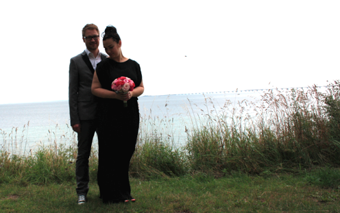

Marriage - Check :)

Danish Summer Love
The last month or so has been crazy... The painting in Heidelberg was actually not that tough. It was mostly the thought about having to do it that made it a tough job. It took me most of the last weekend in Heidelberg, but I did manage to hang out with the guys one last time before I ‘checked out’ and handed over the keys to my landlord. I took the train back to Denmark so I didn’t have to worry about having too much heavy luggage - I had quite a bit ;)
I got to Denmark on thursday morning where Mette picked me up in Odense. We spent most of the day shopping in Odense as I needed to get some new clothes for our wedding. Yeah - you got it right: our wedding. I don’t think I have mentioned it in here yet, but Mette and I got married two weeks ago! Hence, I needed some new clothes. In the end I wore my beloved Converse (rock on!) but the rest of my outfit was brand new. As there was only ~1 week from I got back to Denmark to the actual marriage most of that week was used on preparing the big day, which included driving to Germany to buy tax-free beer and wine at the boarder shops, raising the party tent we borrowed for the party and planing/making the food for the buffet.
Last year I proposed to Mette and she luckily said yes. We decided to keep it to ourselves as we didn’t really know when the big day would be. However, as I got offered the post-doc position in the US in february it seemed convenient to get married before leaving Europe as this would make the visa situation much simpler. In the beginning we didn’t want to make a big fuss out of it and planned to pass by the city hall with just our parents and siblings. However, we changed our minds and decided to combine the marriage with a farewell get2gether. Hence, on the 4th of august, i.e., on 4 - 8 - 12 we got married at Nyborg city hall in front of our families and closest friends. Afterwards the 60+ guests joined us for lunch in my parents in law’s garden. Luckily the danish summer didn’t screw it all up and we had a great day. In the evening Mette and I drove to a nearby Inn called Munkebo Kro where we had reserved a room for the night and an amazing 5 course gourmet dinner (I could write a whole post on just that). A great way to finish a truly awesome day.
Thank you everyone for making it perfect!
Last week we could then go to the american embassy in Copenhagen for the visa interviews as husband and wife. We had heard a lot of stories about how problematic applying for visa can be, but in our case it went extremely smooth. As we already knew that no electronics of any kind is allowed in the embassy we didn’t bring any when we arrived ~45minutes in advance of our scheduled interview. The guards were positively surprised about that and after just 5 minutes of waiting and security checks we entered the embassy. Here we were called to the counter to ‘check in’ fairly quickly and after just 10 more minutes of waiting they were ready for the ‘interviews’. Well they were not really interviews. They just wanted to hear us say that the purpose of the journey is that I got a job and Mette is joining. Then they wanted to make sure that we had money enough to sustain a living and see the documents from our marriage. Easy peasy!
After the interview we spent some time shopping in Copenhagen (I really miss that city!). In the evening we went for dinner with some of our good friends. They were at the wedding as well, but due to all the impressions Mette and I didn’t really manage to chat with them there, so it was really great to hang out with them without all the fuss of the wedding surrounding it. We had a great night with some great food!
Besides going to the embassy I used last week and this week to pick up speed on work again and sort out a lot of the paper works for the moving, e.g., hotel, moving company, bank account rearrangements, etc.
So now we are (almost) fully ready for the states... It’s gonna be awesome!
/K
To those curious souls out there: when we have sorted all the pictures from the wedding we’ll upload a couple of them to brag about our big day - don’t worry ;)

Friday, 17 August 2012
